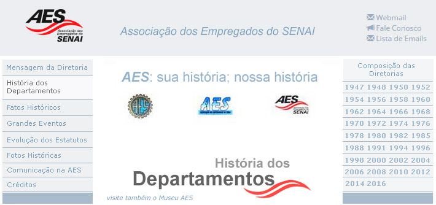

A Associação dos Empregados do Senai - AES, fundada em 21 de novembro de 1947, com sede, administração e foro na Cidade de São Paulo, é uma entidade de duração indeterminada, tendo por fim desenvolver entre seus associados o espírito agremiativo e de solidariedade, servi-los e assisti-los e trabalhar pelo seu bem estar. A AES, em sua estrutura, conta com os vários departamentos que são os responsáveis pela operacionalização das ações para o cumprimento dessa grande missão. Os departamentos dão suporte às decisões da Diretoria da Associação no estabelecimento de metas e estratégias de ação de curto e de médio prazo e, sempre que necessário, se amoldam no sentido de alcançar, de modo eficaz, os objetivos estabelecidos. Ao longo do tempo, os departamentos da AES, passaram por alterações em sua estrutura e modo de atuação, sempre buscando o ajuste em face das necessidades dos associados ou a melhor adaptação às exigências conjunturais. Em algumas ocasiões a mudança do departamento deveu-se à regulamentação da legislação correspondente e, em outras, os departamentos foram extintos quando o objeto de sua ação fora absorvido por outra instituição. Tudo isso faz parte do dinamismo que envolve a nossa Associação e a nossa sociedade. Assim, para melhor conhecer a Associação dos Empregados do SENAI, vamos a uma resenha sobre seus departamentos.
Departamento de Abastecimento Funcionou por 18 anos no período de 1947 a 1966. Organizado como um minimercado, foi sendo montado aos poucos, até ser instalado no 5º andar da Escola Roberto Simonsen. Vendia mantimentos, produtos para as festas natalinas, calçados, tecidos, material escolar e alguns eletrodomésticos. Durante algum tempo contou com os serviços de um alfaiate. Fazia a entrega domiciliar com os caminhões do SENAI, conforme roteiro previamente organizado. As despesas eram descontadas em folha de pagamento. Montou subpostos de abastecimento em diversas Escolas como de Campinas, de Santo André, de Bauru e de Campo Grande (MT), entre outras. Administrou, ainda, o Restaurante da Sede do SENAI por 16 anos, de 1950 a 1966. O Departamento de Abastecimento foi extinto por ocasião da ampliação da rede de mercados do SESI, que também oferecia o benefício do desconto em folha e atendia a um maior número de beneficiários.
Departamento Beneficente Funcionou durante 25 anos entre 1947 e 1972. Inicialmente, com financiamento e repasse de verbas pelo SENAI, concedia empréstimos resgatáveis em parcelas descontadas na folha de pagamento, com juros abaixo do mercado. Durante um período passou a conceder empréstimos para a “Aquisição da Casa Própria” e instituiu o “Fundo de Auxílio para Aquisição e Reforma de Imóveis”. Em abril de 1959 a AES criou a CEAF – Caixa de Economia e Assistência Financeira – com capital formado pelas contribuições dos próprios associados para a concessão de empréstimos, em substituição ao sistema anterior. O Departamento foi extinto em 1972 após a criação da Lei 5764 de dezembro de 1971 que estabeleceu regras para o funcionamento das Cooperativas de Crédito que inviabilizaram a prestação desse serviço pela AES.
Departamento Social Recreativo Funcionou no período de 1947 a 1966, quando foram reorganizados os Departamentos. Em 1966 integrou-se ao Departamento Esportivo constituindo o Departamento Esportivo, Social e Recreativo. Organizava bailes mensais, vesperais dançantes, festas juninas, festas de Natal para filhos de associados, Concursos de Rainha da Primavera, viagens de turismo, torneios culturais de Xadrez e outras atividades recreativas. Algumas Escolas como Campinas, Bauru, Taubaté, Marília e São Carlos eram autorizadas pela AES a ficar com as mensalidades dos associados por um período para desenvolver atividades recreativas.
Departamento de Saúde Funcionou por 22 anos de 1947 a 1969 quando o SENAI implantou seu Plano de Saúde. Organizado em parceria com o Serviço de Higiene do Trabalho do SENAI, oferecia serviços médico-odontológicos, a preço de custo e com financiamento. Mantinha uma rede de médicos credenciados, com descontos nas consultas. Para cirurgias foi estabelecido um convênio com o Hospital do SESI em São Paulo. Oferecia serviços de diagnóstico (exames de laboratório e de radiologia) realizados na atual Escola Roberto Simonsen. Mantinha ainda, em parceria com o SENAI, uma rede de consultórios odontológicos, inclusive no interior do Estado, com cobrança parcelada. Na sede do SENAI eram prestados serviços de enfermagem.
Departamento Esportivo Funcionou por 19 anos, de 1947 até 1966. Nesse ano, com a reformulação dos Departamentos, passou a denominar-se Departamento Esportivo, Social e Recreativo. No início, o denominado “esporte-rei”, o ”football” era disputado por várias equipes de associados que recebiam jogos de camisetas com o símbolo da AES. Além dos jogos entre as equipes de associados eram realizados jogos contra equipes de outras empresas, ocasião em que o grupo da AES representava o SENAI. Promoveu o Voleibol e o Basquete, inclusive para as equipes femininas da AES. Na Capital, o transporte dos atletas era feito pelo ônibus do SENAI.
Departamento Cultural Funcionou no período de 1947 a 1966, por 19 anos, quando houve a reformulação dos Departamentos, sendo substituído pelo Departamento de Cultura e Divulgação. Em janeiro de 1948 realizou, com grande sucesso, a 1ª Exposição de Arte da AES. Organizava palestras mensais, exposições de fotos de desenhos e de artes plásticas. Durante um longo período promoveu sessões semanais de cinema, na sede do SENAI em São Paulo, projetando filmes cedidos pelo SESI. Promoveu diversos cursos para os associados como: Inglês, Francês, Corte e Costura, Fotografia, Português e Matemática para os serventes, curso para habilitação de motoristas e, em 1950, até um “Curso de Radiotécnico”. Patrocinou a organização da Orquestra e Coro da AES, com 19 integrantes, que se apresentava como Orquestra Filarmônica do SENAI. Organizou um grupo teatral, chamado Grupo Teatral de Novos, que se apresentou nos teatros do SESI e do SENAI, inclusive em Santo André, Itu e Taubaté, com grande sucesso. Sete peças foram apresentadas: O Barão de Cotia em 1952, Os Transviados em 1953, Arsênico e Alfazema em 1954 (esta nos Teatros João Caetano e Leopoldo Froes), A Ceia dos Cardeais, Paraísos Conjugais em 1955, Manhãs de Sol em 1955 e O Secretário de Sua Excelência, o Futuro Presidente em 1957. Manteve uma biblioteca circulante com cerca de mil livros doados pelos associados. Promoveu visitas a diversas instituições, inclusive ao Planetário da Cidade de São Paulo em 1958 com a inscrição de 332 associados.
Departamento Editorial Funcionou por 19 anos de 1947 a 1966 quando foi extinto. Já no mês de janeiro de 1948 (2 meses após a fundação da AES) publicou o primeiro Boletim da AES, com 4 páginas. Essa publicação manteve-se até outubro de 1950. Em 1954, foi iniciada a publicação do Jornal da AES, que contava com inserções publicitárias e que se manteve durante mais de 7 anos. Após 1961 o Departamento fornecia notícias esporádicas para veiculação pelo Informativo SENAI.
Departamento CABES – Caixa Beneficente dos Empregados do SENAI A CABES foi criada em junho de 1953 e funcionou por 21 anos até 1974 quando o SENAI instituiu o PBS – Plano de Benefícios Sociais. Constituía-se em um fundo financeiro formado pela contribuição dos participantes e do SENAI e tinha por objetivo a concessão de auxílios e benefícios como: Complementação Salarial para empregados afastados por doença, Auxílio Natalidade, Auxílio Funeral e reembolso por despesas médico-hospitalares e farmacêuticas. Era gerida por um Conselho formado por um representante indicado pelo SENAI, um Representante indicado pela AES e um representante dos associados escolhidos em eleição.
Departamento da Colônia de Férias Criado em 1963 com a aquisição do Rancho Camboriú, em Itanhaém, funcionou por 32 anos até 1995 quando foi extinto devido à criação do cargo de Gerente da Colônia de Férias. Tinha por finalidade planejar, orientar, organizar e supervisionar as reformas, construções e adaptações necessárias ao funcionamento da Colônia de Férias. Auxiliou na organização do Regulamento de Utilização da Colônia de Férias, cuidou da implantação e utilização da área de camping e da implantação dos processos administrativos.
Departamento Fundo de Solidariedade Criado em 1966, o Departamento estabeleceu o Auxílio Funeral a ser pago por ocasião do óbito do associado, constituindo um importante benefício. Foi substituído pelo FUMUS – Fundo Mútuo de Solidariedade que regulamentou a concessão do benefício e estendeu o pagamento do auxílio pelo óbito de dependentes do associado. Após funcionar por 28 anos, deixou de ser considerado Departamento em 1994, passando a ser um serviço normal da AES.
Departamento Esportivo, Social e Recreativo Implantado em 1966 reunindo esporte e atividades sociais, funcionou por 36 anos até 2002 quando voltou a ter as atividades sociais separadas. Organizou as festas de Natal com entrega de presentes para os filhos de associados durante 8 anos. Realizou bailes, festas juninas, festa das crianças e eventos esportivos. Promoveu a Festa do Chope nos navios Turimar II e V, em Santos. Criou, organizou e regulamentou o FARAES, caracterizado como campeonato estadual de jogos de salão, que em 2014 alcançou sua 22ª edição. Atendendo a demandas diversas, organizou o FUTSAES com a realização de torneios e campeonatos de futebol todos os anos, e também os campeonatos de xadrez e bilhar. Promoveu a realização de 7 Bailes da Primavera, a 1ª Oktoberfest na Colônia de Férias, Noites de Pizza e Bingo, churrascadas na sede da AES, entre outros. Realizou com sucesso um grande baile de comemoração dos 50 anos da AES. Regulamentou o Projeto Confraternize e organizou a Festa das Crianças.
Consórcio de Carro Próprio Instituído como Departamento em 1966, o consórcio foi organizado e administrado diretamente pela AES, formando grupos de 40 pessoas, com direito a carro retirado por lance ou por sorteio. Durante o período inicial de 8 anos entregou 180 veículos. Continuou com o procedimento de auto-administração até 1974, com registro de funcionamento oficial até 1982. A partir daquele ano passou a ser feito por meio de empresa contratada, tendo permanecido ativo até 1988. No total, o serviço foi prestado ou oferecido pela AES por 22 anos.
Departamento Esportivo–Interior Implantado em 1966 como Departamento de Assistência ao Interior, teve a denominação alterada para Departamento do Interior em 1982 e em fevereiro de 2014 passou a chamar-se Departamento Esportivo–Interior. Funcionou precariamente até 1993, tendo responsáveis designados por regiões para a organização de eventos esportivos e sociais locais. Em 1994, com a regulamentação do Departamento, passou a dar assistência e orientação para os Representantes do Interior. Organizou e orientou os convênios com farmácias e outros fornecedores de serviços nas cidades do interior do Estado. Centraliza a organização de eventos esportivos no interior, como os campeonatos de futebol society, futsal livre e para veteranos, com grande participação de associados. Promove em parceria com o Departamento Esportivo-Capital os toneios do FARAES. Promove a confraternização baseada no esporte e envolve praticamente todo o interior do estado.
Departamento Cultural e Recreativo Implantado em 1966 como Departamento de Cultura e Divulgação, juntando os antigos Departamentos Cultural e Editorial, ganhou a atual denominação em março de 2014. Esse novo Departamento (com mais de 48 anos!) continuou dando ênfase aos processos culturais, promovendo eventos como o I CONCROPAES - Concurso de Contos, Crônicas e Poesias da AES, concursos culturais seguidas de exposições (de fotos e de presépios) e concursos de artes infanto-juvenis. Organizou o Grupo de Teatro "Trupe Flic D Vic" (que apresentou duas peças: Mural Mulher e Fome e Folia, sendo que esta última recebeu 7 prêmios), promoveu a Feira de Livros Didáticos e implantou a Biblioteca de livros infantis na Colônia de Férias. De outubro de 1994 a abril de 2011 administrou a edição e a distribuição regular do jornal Informativo AES. Patrocinou, ainda, a formação da Banda Lion (conjunto musical formado por associados), que se apresentou entre 1995 e 2000, encarregada da animação dos eventos da AES e Festa de Fim de Ano do SENAI. A partir de 1996, além dos eventos culturais, passou a organizar a comemoração do Dia das Mães, do Dia dos Pais e o envio de cartões de aniversário dos associados. Encarregou-se da organização de festas juninas, de festas das crianças, do Festival de Pipas e dos bailes comemorativos. Promoveu acampamento para crianças no Clube de Campo e implantou uma gibiteca na Colônia de Férias e os Festivais de Inverno no Clube de Campo em Jundiaí. Implantou e vem desenvolvendo com regularidade os Encontros Culturais e as sessões de Cine Debate.
Departamento de Promoções Implantado em 1985 funcionou por 16 anos, até 2001, quando ocorreu a transferência da AES para local que não reunia condições para esse tipo de serviço. Cuidava de contratos, exposição e vendas de produtos promocionais, como panetones, mel, chocolates, jóias, roupas, bolsas, calçados e presentes. Promoveu o consórcio de computadores.
Departamento de Aposentados Criado estatuariamente em 1982, funcionou precariamente até 1995. Em 1985 promoveu a contratação da AMESP para a prestação de serviços de assistência médica para associados aposentados e agregados. Em 1992 a AES contava com apenas 223 associados aposentados e, em fev/2008, com 1399. Em 1995, com o restabelecimento do funcionamento regular do Departamento, foi desenvolvido e implantado o Programa De Bem com a Vida, que consiste em integrar o associado aposentado às atividades associativas e promover a saúde física e mental, possibilitando a confraternização entre diferentes gerações, o resgate da rede de relacionamentos e a melhoria da qualidade de vida por meio de ações desenvolvidas com regularidade. O programa prevê: a divulgação dos serviços e atividades da AES por meio da publicação mensal do Boletim Informativo; realização de reuniões mensais conjugadas com palestras de interesse geral; realização de Encontros Regionais em diferentes localidades da capital e do interior proporcionando a todos os associados a participação e a confraternização; desenvolvimento do Programa de Qualidade de Vida (5 dias na Colônia de Férias), como proposta de vivência, extrapolando a teoria; realização de programa anual de saúde, promovendo a prevenção de doenças cardiovasculares e de câncer de próstata, possibilitando a continuidade do tratamento; realização e programas de turismo e outros eventos de caráter cultural. Até 2007, realizou mais de 30 Encontros Regionais, ocorridos em: Rio Claro (2), Araraquara, Guarulhos, Campinas (2), Santos (2), Sorocaba, Jundiaí (4), Bauru, São Caetano, Limeira, Vale do Parnaíba (Caraguatatuba), Presidente Prudente, Piracicaba, Boracéia (3), Ribeirão Preto, Itu, São Paulo - no Ipiranga, na Vila Leopoldina e no Brás (2), Taubaté (Cunha), São Bernardo do Campo, Suzano e São José dos Campos.
Departamento do Clube de Campo Criado em 1984 logo após a aquisição do Sitio Boa Esperança, em Jundiaí, funcionou por 11 anos até 1995 quando foi extinto por ocasião da criação do cargo de Gerente do Clube de Campo. Tinha por finalidade planejar, orientar, organizar e supervisionar as obras de adaptação do sítio, como terraplenagem, arborização, jardinagem, limpeza dos lagos, sistema de captação de água e construções diversas, necessárias ao funcionamento do Clube de Campo. Auxiliou na organização do Regulamento de Utilização do Clube de Campo e cuidou da implantação dos processos administrativos.
Departamento Clube Náutico Criado em 2004 funciona até os dias atuais. Tem por finalidade planejar, orientar, organizar e supervisionar as obras de adaptação do Clube, como, arborização, jardinagem, limpeza e construções diversas necessárias ao funcionamento do Clube. Auxiliou na organização do Regulamento de Utilização do Clube de Campo e cuidou da implantação dos processos administrativos.
Departamento Esportivo-Capital Implantado como Departamento Esportivo em 2002, ganhou a atual denominação em março de 2014. Cuidava exclusivamente da organização dos campeonatos esportivos da Região da Grande São Paulo, como futsal, futebol society e festivais de futebol de salão. Em 2002 organizou, com o apoio do Departamento de Cultura e Divulgação, o Festival Esportivo realizado durante a Festa das Crianças. Nesse evento, o festival foi dividido nas modalidades Voleibol e Futebol Society envolvendo equipes de crianças e de adultos. Com a construção da cancha de bocha no Clube de Campo em Jundiaí em 2011, este Departamento passou a promover também os torneios de bocha da AES. A partir de 2014 o Departamento Esportivo-Capital passou a promover as provas de pedestrianismo com corridas de 5 e 10 km. Promove em parceria com o Departamento Esportivo-Interior os torneios do FARAES. Este Departamento promove a integração dos associados por meio de atividades esportivas e vem funcionando regularmente.
|